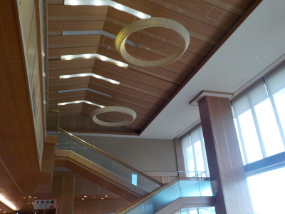
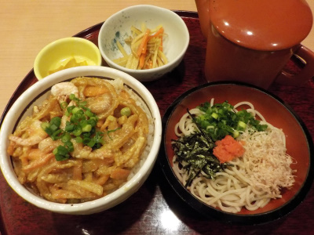
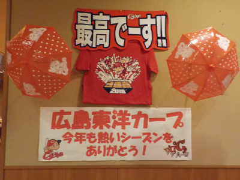
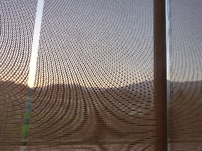

玉峰山荘で日帰り温泉です。
2021/08/01

温泉の写真は撮れないのでフロント付近の写真です。
天井高くて広々しててリゾートって感じで好きです。ここでのんびりする人って少ないので快適だったりします。
宿泊客が来る前くらいの時間だったので温泉は空いていました。快適だったんですが、木の椅子の座りごこちが何か悪いかなって思いました。
島根県仁多郡奥出雲町亀嵩3609-1
2021/08/01

温泉の写真は撮れないのでフロント付近の写真です。
天井高くて広々しててリゾートって感じで好きです。ここでのんびりする人って少ないので快適だったりします。
宿泊客が来る前くらいの時間だったので温泉は空いていました。快適だったんですが、木の椅子の座りごこちが何か悪いかなって思いました。
2018/11/18
紅葉を見た帰りに温泉に行きました。
今日は日中は暖かかったですが、夜は冷えたので温泉が気持ち良かったです。
内風呂はすぐにのぼせそうな水温だったので、露天は大人気でした。ここの露天は大きめなので、人が空くまで待つようなことがなくてよかったです。

玉峰山荘は2か所食事する場所があるんですが、私は食券を買うタイプのお店で食事しました。
小さいかき揚げ丼とお蕎麦のセットです。特に記載はなかった思うんですが、きっと仁多米と奥出雲そばですよね。
かき揚げはサクサクでした。ご飯につゆが浸かってて、一緒に食べると美味しかったです。
お蕎麦は蕎麦味がしっかり味わえました。こっちも美味しかったです。

なぜかカープグッズがありました。
なにげに気になるんですが、広島東洋カープの「東洋」って必要なのかな？
2018/07/14
ロビーから夕暮れののどかな景色が見れました。

サンシェード越しの写真です。
外は日が沈んだんですがまだ明るいです。
田舎の温泉はこうゆう景色がみれていいですね。
ロビーのソファーに座って、のんびり景色を見ていました。
その後温泉に入って帰りました。温泉に入ると肌がツヤツヤになるので若返った感じがしていいですね。